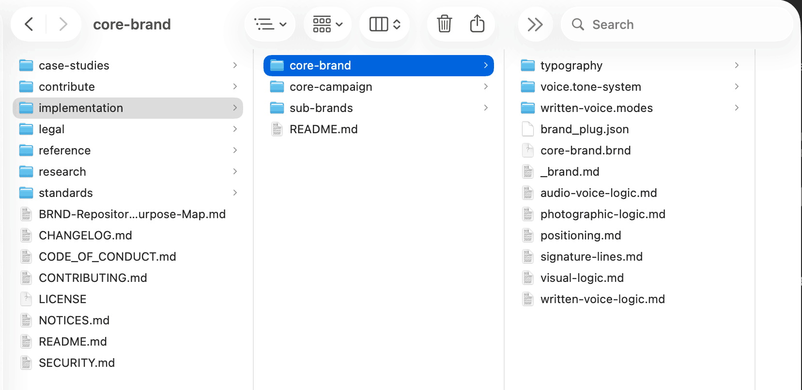
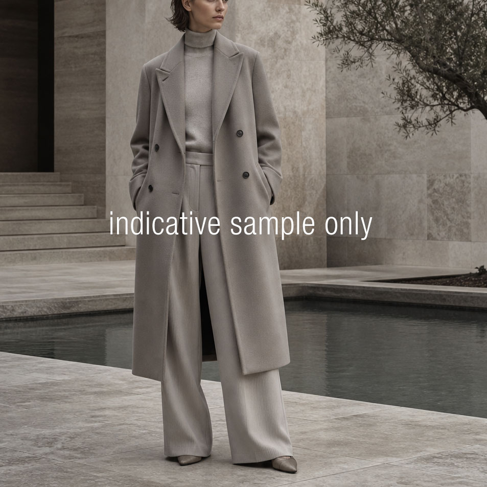

AI is changing how brand work moves through tools, agents, and automated systems. Your guidelines were never built to travel with it. BRND-standard gives your brand a portable form that does. You keep your files. You keep control of what you share. The tools will keep changing. Your brand does not have to.
Brand work used to live with a small group of people who held the rules in their heads, on shared drives, and in PDFs. That worked when the people and the tools sat close together. They no longer do. Your team is using AI tools, vendor platforms, and automated workflows that all need the same brand context, and none of them can read a PDF the way a person can.
The cost shows up quietly. The same logo treated three different ways. Voice that drifts when the work moves to a new tool. Decisions you cannot trace later because no one remembers who set the rule. The brand becomes harder to hold together. The cause is not lack of care. It is a system that was never built for this.
Your guidelines live in PDFs and team memory. AI tools and agents cannot read them reliably, so they guess.
Outputs drift across tools and vendors. The same brand starts looking and sounding like several different brands.
Decisions lose their trail. You can no longer point to where a rule came from, when it changed, or who approved it.
BRND-standard is an open specification for brand identity that machines and people can both read. Your voice, tone, visual logic, and positioning live in plain text files organised by a shared structure. Any AI tool, agent, or workflow built to read the standard can pick them up and use them. Licensed under CC BY 4.0. Free to use, free to extend, free to build on.
Brand Provenance is the originator of BRND-standard. This site is where the standard is published, explained, and kept easy to follow as it grows. It is the front door for the project. The standard itself lives openly on GitHub. The work here is to make it readable and useful for the brands, agencies, and developers who want to put it to work.
BRND-standard is at v0.1.0-alpha, founder-led, and open for community comment. The framework is sound and usable today for the surfaces that exist. New surfaces will expand what is possible without breaking what is already there. The content layer is yours to build. The system speaks the same conceptual language AI already understands, so compliant systems can reflect your brand back with less guesswork. As AI tools improve, your BRND-standard sharpens alongside them.
The framework is open. The brand inside it is yours alone. BRND-standard draws a clear line between what travels and what stays home, and the line sits where you want it.
You are not handing your brand to a platform, an agency, or a vendor. You are giving it a portable shape that any compliant system can read while the original stays in your hands.
Your DAM, creative assets, and source files stay on your own systems. The standard defines the shape of your brand logic. It does not store anything.
When an agency, vendor, or workflow asks for your brand context, you share only the files that project needs. The whole archive does not have to leave your hands.
Your brand history stays preserved. When a brand evolves, you version it. Past states remain available for revival, audit, or reference.
The deliverable is a folder. Markdown files hold the human-authored parts (voice, positioning, photographic logic). JSON files hold the parts machines need to parse cleanly. One concern per file. The structure is defined by the standard. The content is yours.
The agentic future needs both natural and programmed language. Markdown carries nuance. JSON carries control. Different AI systems will read the same files slightly differently, and as AI improves, your BRND-standard sharpens alongside it. Human judgement still sits inside the loop. This is augmentation rather than automation.

An early structural skeleton of the standard. The framework will deepen with more intuitive concepts over time, and a dedicated UI is in development to assist with authoring and editing these files.
Markdown for the human side. Voice, positioning, and dialect rules read like prose, written for the people who care about them most.
JSON where machines need to parse cleanly. Structured plug files sit alongside the markdown so any compliant system can ingest your brand without guessing.
Adopt partially or holistically. Start with voice. Add visual logic later. Bring in sub-brands and campaigns when the work calls for it. Brands that prepare these surfaces now will move quickly when agentic tools mature.
The folder remains the canonical output. The forthcoming UI will be one of several ways to populate it, alongside direct authoring, agency support, or a translation engagement with Brand Provenance.
A working demonstration using Aether Protocol: a minimum viable brand concept. The same brief, processed two ways.
"It's not just a lattice, it's a revolutionary way to delve into your data. We utilize seamless transitions to orchestrate a tapestry of insights for our customers — making your workflow better."
"Our lattice provides a precise way to use your data. We orchestrate insights for our members, building a foundation for their protocol."
The logic that produced this output, voice register, lexical guardrails, dialect rules, tone parameters, is defined once in structured markdown files and travels with the brand across any compliant system.
Your brand sounds different in a LinkedIn post than it does in an Instagram caption. BRND-standard captures that. Each context has its own register, mood, and purpose, with dials for warmth, authority, brevity, and energy. Same brand, two settings, two outputs that still sound like you.
"Brand rules written for people cannot travel through AI workflows reliably. That is not a technology limitation. It is a structural one. BRND-standard addresses the structure."
"Two years of building this in public. Thank you to everyone who came early and stayed curious. The work is sharper because you were here."
Same brand. Same dials. Two contexts, two outputs. The dials add useful variation while keeping every piece of writing recognisably yours.
The same idea works for photography. Subject presence, light, expression range, depth, and colour temperature are dials you set. The same brand produces an editorial image and an intimate one, both still recognisably itself, both written down in a form any compliant system can read.

Mid-distance frame. Subject composed, direct to camera. Clean, flat light with directional control. Sharp field throughout. Cool, controlled palette. These structures are still being developed and will continue to improve as the BRND-standard blueprint evolves.
Close frame with selective focus. Subject relaxed, present, not performing. Warm, side-lit atmosphere. Compressed depth, soft background separation. Warm, saturated palette. The images here are illustrative samples only to visualise the impact of natural language over image production.
Intention: the same logic that governs voice also governs image-making. A visual brief written in BRND-standard is as portable as a voice setting, and any compliant system can read both. These examples illustrate the concept and are not literal specifications. Image production does not always need to be considered as a final image. It could simply be a visual aid to assist with photography art direction.
Voice and image are shown here as two examples. The same structure can hold typography, layout, photographic style, and any other brand surface. BRND-standard does not act as an agent. It is the shared vocabulary that lets agents build with your brand instead of around it.
Your voice, tone, visual rules, positioning, and dialect behaviour go into plain text files. One subject per file, organised by the BRND-standard structure. Authored once, ready to be read by any compliant system.
Your brand lives in a governed, versioned repository. The standard defines the shape. You own the content. You version it the way you version anything else important to your business.
AI tools, vendor platforms, and creative workflows built to read BRND-standard pull your brand logic from the governed source. Every output traces back to a file you wrote and a version you approved.
Right now, putting BRND-standard to use means giving an AI tool the relevant files as context. Attach them as project files in Claude or ChatGPT, paste them into a system prompt, point an agent at the GitHub repo, or feed them into a RAG pipeline. As more tools adopt the standard natively, that handover gets simpler. Your folder is the constant.
Your image binaries (JPGs, PSDs, raw assets) stay in your DAM. The folder does not duplicate them. It describes your imagery in plain language and can reference files by path when a workflow needs them. Existing reference imagery can also sit alongside the BRND files as a visual guide while the image side of the standard continues to be defined.
You have built a brand worth protecting. You want it to stay coherent as your tools, vendors, and AI workflows keep changing around you.
You hold brand identity for your clients. You are already producing work across many AI tools and platforms, and you need brand context that travels cleanly between them.
You are building agentic workflows. You want brand context that is structured, portable, and ready to plug into your tools from day one.
Three doubts come up before everything else when people meet BRND-standard for the first time. Each one tends to dissolve once the standard is in front of you. Here is how we would put it.
“My brand is small.”
Start with voice alone. The standard scales down as easily as it scales up. A single founder with a clear voice has as much to gain as an enterprise with sub-brands.
“I do not have a developer team.”
You do not need one. Author in plain language. Brand Provenance can handle the conversion into structured form, and the forthcoming UI will make in-house authoring approachable for non-technical teams.
“I already have extensive brand guidelines.”
Keep them. The standard is the shape your existing content travels in. Your guidelines stay yours. The structure makes them portable into AI workflows that cannot read PDFs.
We are working with a small number of early brands to convert selected parts of their identity into BRND-standard form. Voice first, visual logic next, sub-brands and campaigns as the work calls for it.
The benefit of preparing now is straightforward. When agentic tools mature, prepared brands move quickly. Unprepared brands rebuild from scratch.
Stay Close
Join the Brand Provenance newsletter to follow how BRND-standard grows and where it goes next. If you would rather talk directly, about shaping your own brand for the agentic future or building compliance into your workflows, get in touch through the form below.
No noise. Updates only when there's something worth sharing.
"I am a Creative Director. My career has run through corporate, retail, and FMCG branding. I have watched brand identity quietly break as work moved into AI tools, agents, and automated systems, and BRND-standard is my response to it. I believe AI should be built around the people who do the work, with you inside it. Your brand should remain yours as the systems around you change. That conviction is what this standard is built on."
Nicholas Girling, Creative Director · Originator of BRND-standard · Brand Provenance, Melbourne